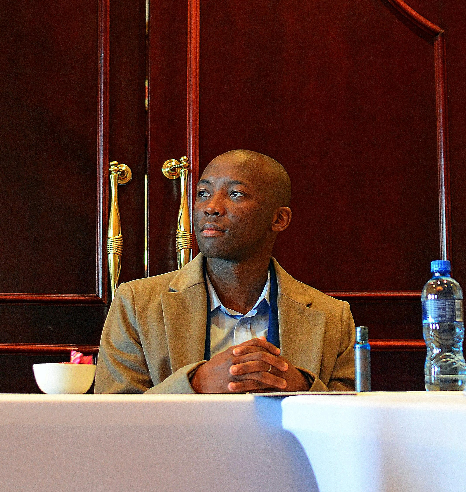
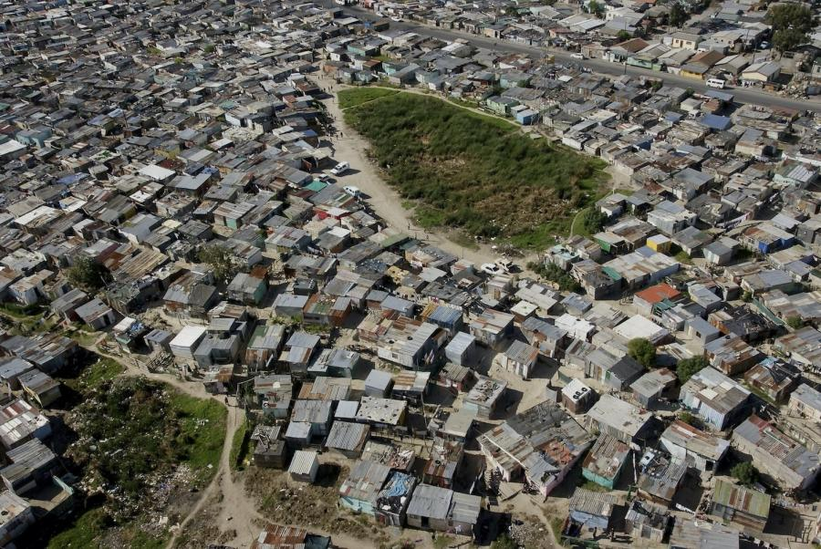
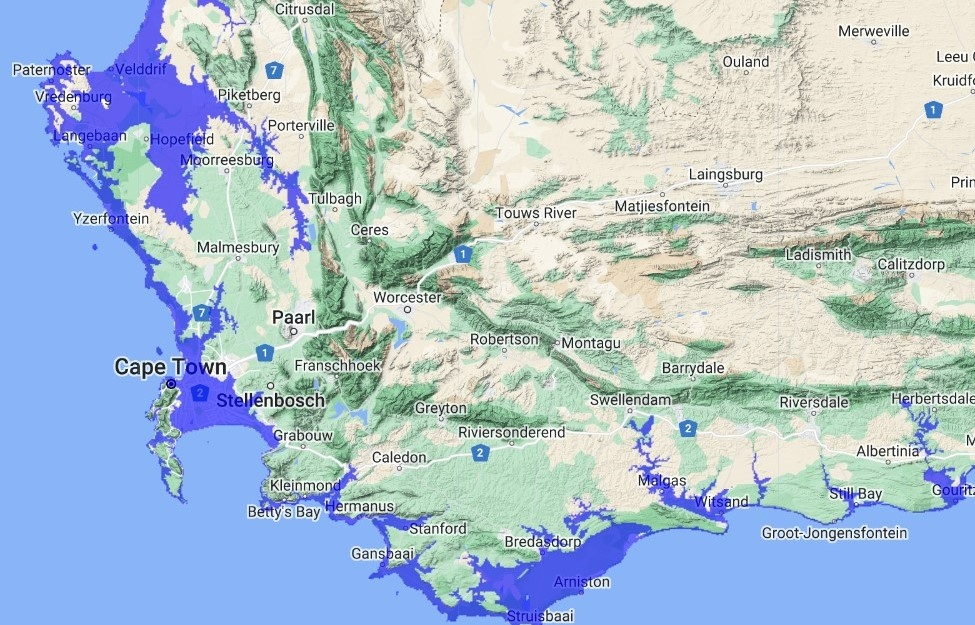
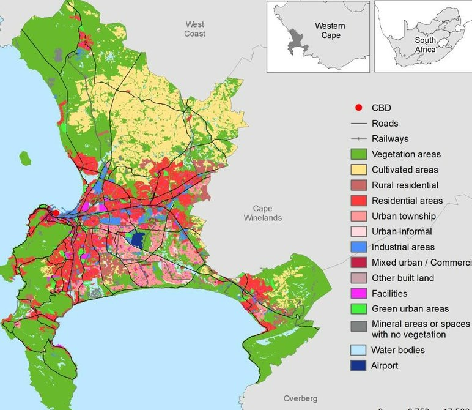

Ndzolo Bam studied for his undergraduate and postgraduate degrees at the University of the Western Cape, focusing on Environmental and Water Science. His research interests primarily focus on Environmental and Water Science, Geographic Information Science, and Remote Sensing. He is enthusiastic about using Earth observation technologies and data analysis techniques to map and monitor the impacts of climate change and land use on ecological infrastructure, specifically, rivers and wetlands to reduce natural disasters and improve water security.


Unveiling the Cape Flats: The spatial interaction of Livelihoods and Ecological Infrastructure.

A simulation of areas that are likely to be impacted by sea water level rise in Coastal Areas.

The script focuses on two crucial aspects in the City of Cape Town: Landcover classes and population density. The landcover classes provide insights into the distribution of various ecosystems, urban areas, agriculture, and natural landscapes. Simultaneously, the population density provides an idea about human habitation patterns and their relationship with the environment.

Donec eget ex magna. Interdum et malesuada fames ac ante ipsum primis in faucibus. Pellentesque venenatis dolor imperdiet dolor mattis sagittis magna etiam.

Donec eget ex magna. Interdum et malesuada fames ac ante ipsum primis in faucibus. Pellentesque venenatis dolor imperdiet dolor mattis sagittis magna etiam.

Donec eget ex magna. Interdum et malesuada fames ac ante ipsum primis in faucibus. Pellentesque venenatis dolor imperdiet dolor mattis sagittis magna etiam.